Enric Ledo Muntal 03-02-2022
Pràctica Gestió de Particions
- Instal·lació d’Ubuntu 20.04.
- Tria "Alguna altra cosa" al tipus d'instal·lació.
Selecciona les següents particions a partir de l'àrea lliure del disc:
- Partició primària de 8 GiB (8192 MiB) muntada a / i amb format ext4.
- Partició primària de 2 GiB muntada a /home amb format ext4.
- Partició primària de 4 GiB muntada a /var amb format XFS.
Tipus | Capacitat | Punt de muntatge | Format |
Primària | 8 GiB (8192 MiB) | / | ext4 |
Primària | 2 GiB | /home | ext4 |
Primària | 4 GiB | /var | XFS |

La resta del disc la deixem sense utilitzar.
- Un cop instal·lat el sistema, fes login i mira com estan les particions (des del terminal fes: sudo fdisk -l /dev/sda)
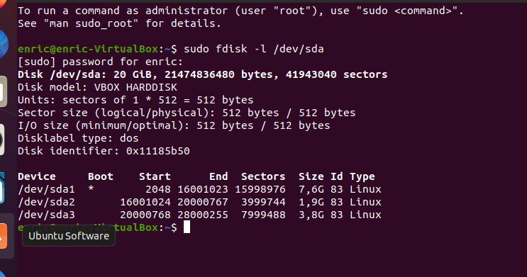
- Quantes particions primàries més pots fer? Demostra-ho a fdisk.

Es poden fer 4 particions primàries en total. On posa “p primary (3 primary, 0 extended, 1 free)”, la traducció és que n’hi ha 3 fetes i una que està lliure.
- Ara te n'adones que has fet la partició on tens /var molt petita i la vols eixamplar.
Reinicia amb el CD en mode Live.
Arrenca el programa GParted.
- Eixampla la partició que conté /var i fes que sigui de 8 GiB.
- Accepta els canvis i reinicia en mode normal (no amb el CD).
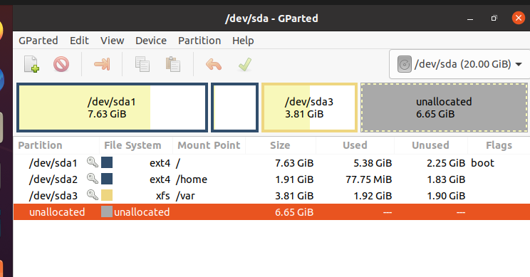
Al principi tenim una capacitat de 3,81GiB i després de modificar-la:

Una capacitat de 8GiB.
- Torna a mostrar l'estat de les particions amb fdisk.
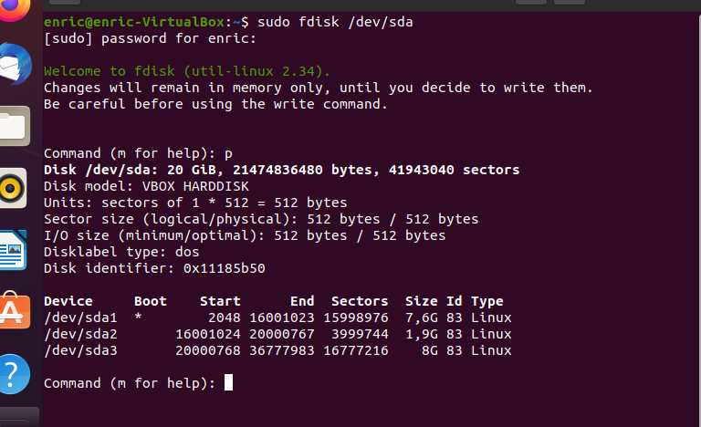
- Utilitza fdisk i, a l'espai de disc lliure, fes:
- Dues particions noves d'1 GiB (pot ser aproximat) cadascuna. Quin tipus de particions han de ser? Per què?
- Esborra la última de les particions anteriors. Quantes particions més de tipus lògic podem crear? Fes la prova creant 6 particions de 100 MiB cadascuna.
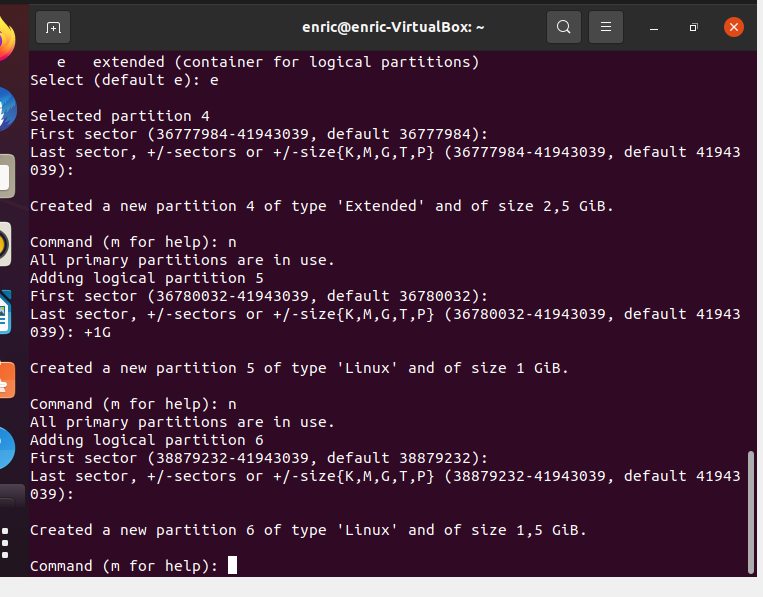
Mostra el resultat (opció p per imprimir).
Hem creat una partició de 1,5 GiB i una altra de 1GiB, les dues no poden ser del tipus primari ja que només podem tenir 4 particions primàries.


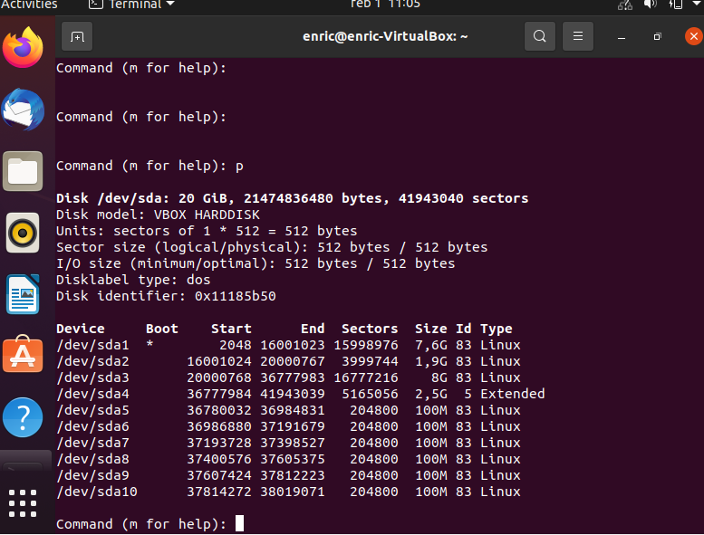
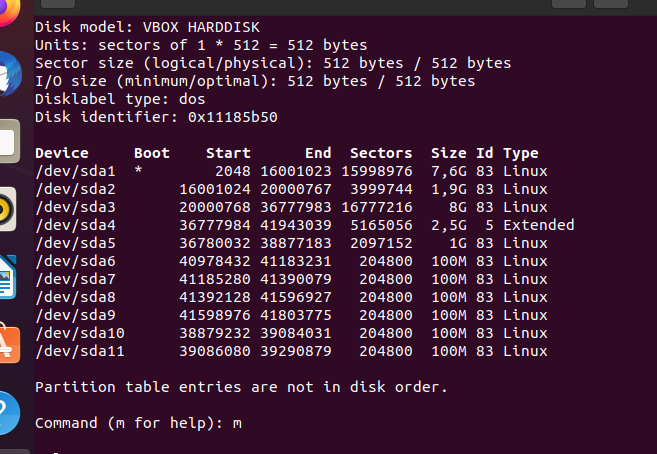
- Dóna format a les anteriors 6 particions amb mkfs: 3 amb ext4, 1 amb ntfs, 1 amb vfat (FAT32).
Particions | Format |
3 | ext4 |
1 | ntfs |
1 | vfat (FAT32) |
1 | XFS |
Pots donar format amb XFS des de l’eina mkfs? Instal·la el paquet xfsprogs i torna-ho a provar.
Mostra el resultat final de com queden les particions amb GParted i enganxa el resultat al document de lliurament de la tasca.


- Apaga la màquina virtual i afegeix un nou disc dur de 10 GiB. Torna a iniciar el sistema.

- Amb el nou disk dur i, fent servir l'eina gparted, crea 2 particions (1 primària i 1 lògica) i dóna-li format.
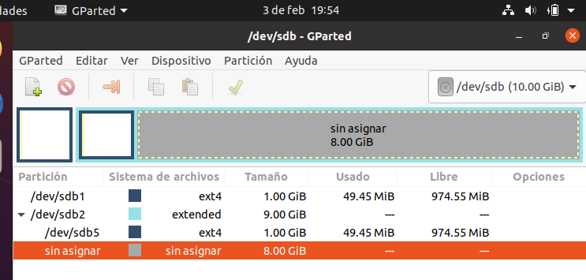
- Reinicia i comprova que apareixen les particions amb la comanda fdisk. Desa un fitxer en alguna de les particions.
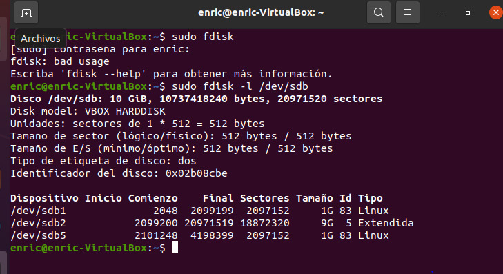
- Ara executa la següent comanda:
sudo dd if=/dev/zero of=/dev/sdb bs=512 count=1
Comprova què ha passat amb les particions. Explica-ho.
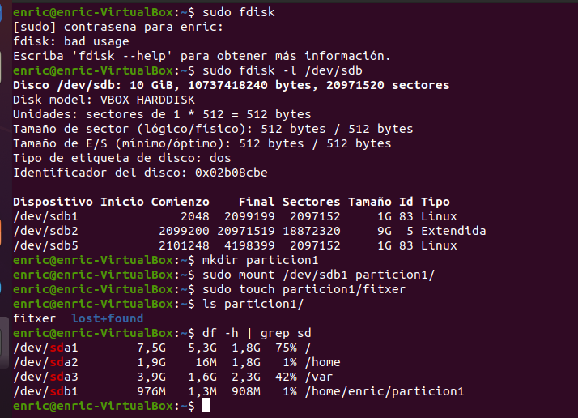
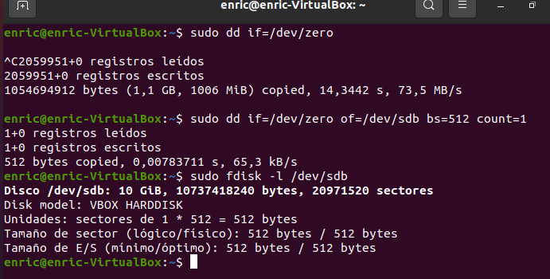- Hem eliminat el MBR i hem perdut informació sobre les particions.
- Amb el mateix disc dur crea ara amb GPT 7 particions consecutives de 1GiB cadascuna. Dóna-li format a les particions de tipus ext4.
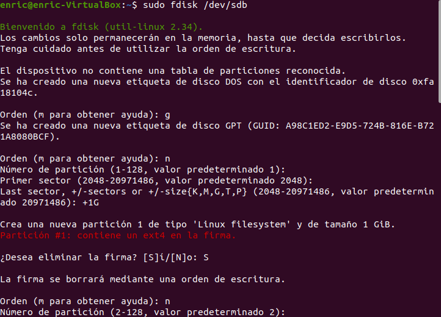
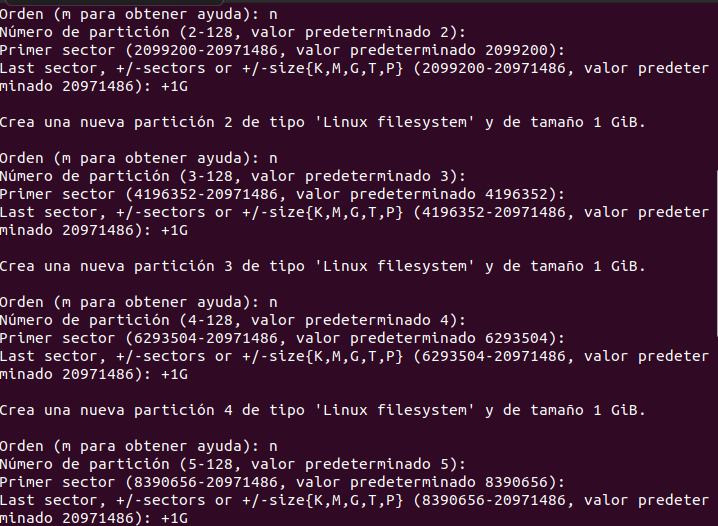

- Verifica que tens les particions creades sense necessitat de cap partició estesa.


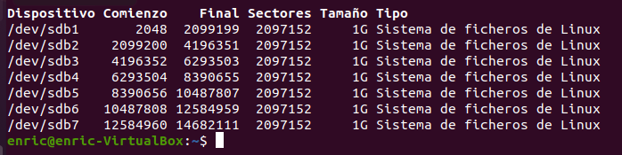
- Crea un fitxer en alguna de les particions (crea una carpeta que serveixi de punt de muntatge i utilitza el fitxer de configuració /etc/fstab). Mostra les comandes que has fet servir i la configuració del fitxer.
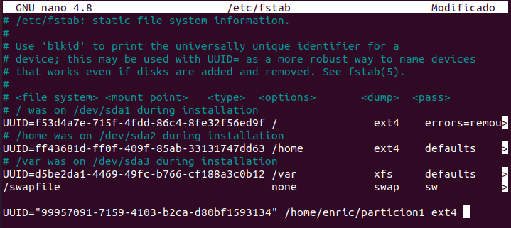

- Ara executa la següent comanda:
sudo dd if=/dev/zero of=/dev/sdb bs=512 count=30

Comprova amb fdisk què ha passat amb les particions.
- Entra amb l'eina gdisk i observa què diu sobre l'estat de la taula de particions GPT.

Què vol dir l'opció "1- Use current GPT" ? Comprova-ho.

- Verifica l'estat de les particions i explica per què has pogut recuperar les particions.

- Crea un fitxer a una partició del segon disc. Pots crear un enllaç dur al fitxer en una altra carpeta de la mateixa partició? I en una carpeta del primer disc al fitxer del segon? Digues una alternativa en cas de què no ho puguis fer.


- No podem crear un enllaç dur entre arxius diferents. Ho podem fer amb un enllaç simbòlic, aquest apuntarà al primer.